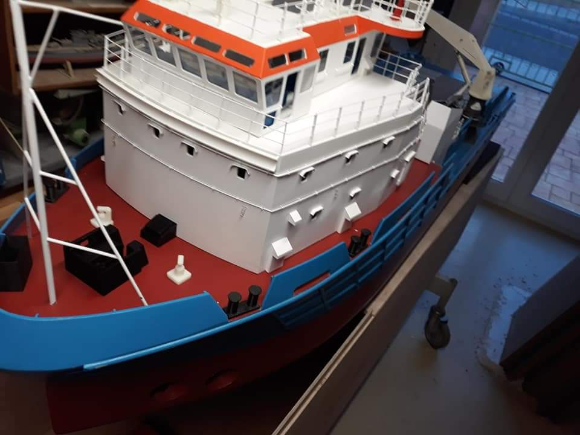
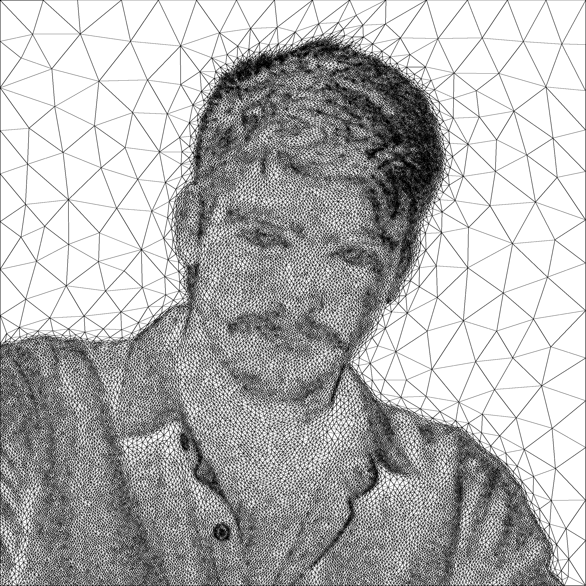

Formation en génie mécanique
Cursus ingénieur, complété par un master en mécanique et performance en service des matériaux et produits.
Étudiant en génie mécanique à l’UTT
À la recherche d’un stage de fin d’études en conception mécanique.
J’aime passer du dessin des pièces à leur fabrication, et développer des outils de calcul et de visualisation.
Cursus ingénieur, complété par un master en mécanique et performance en service des matériaux et produits.
Travail sur un système mécanique automatisé et son intégration robotisée.
CAO, CNC, impression 3D et programmation, mises en pratique sur mes réalisations.
Mes réalisations
Les projets, les essais et ce que j’ai réalisé.
Explorer le portfolio

Pour échanger sur mon parcours ou une possibilité de stage.